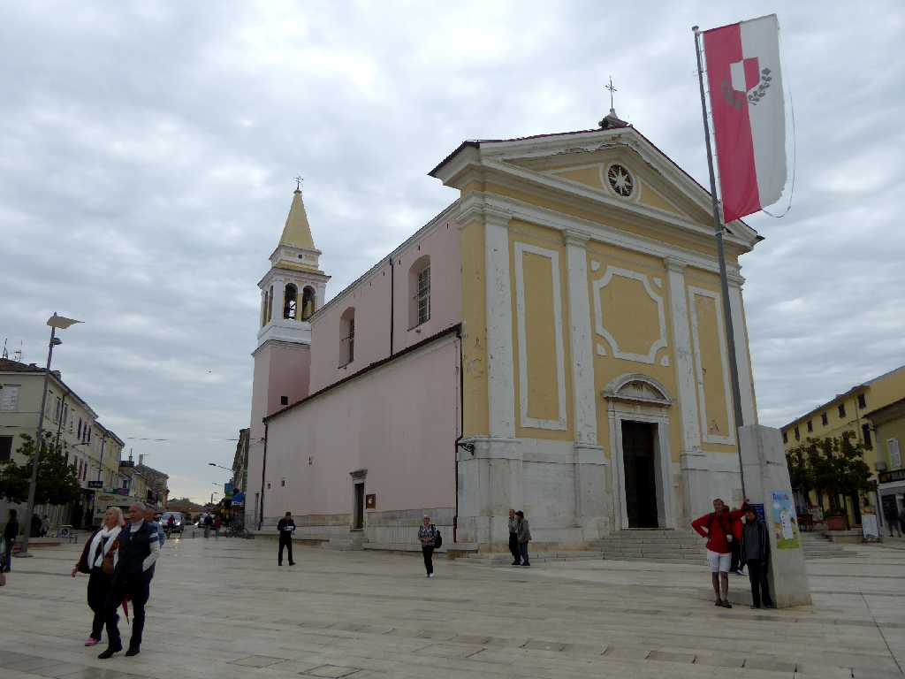
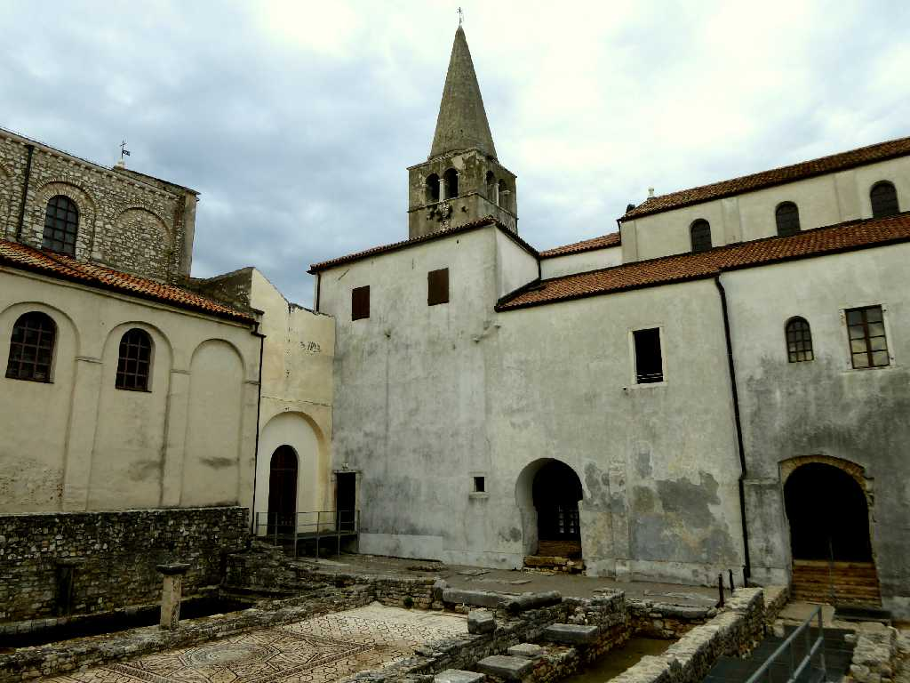
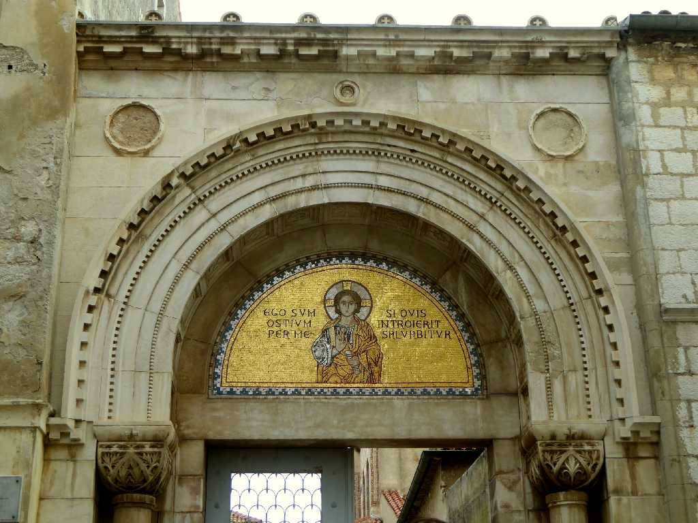
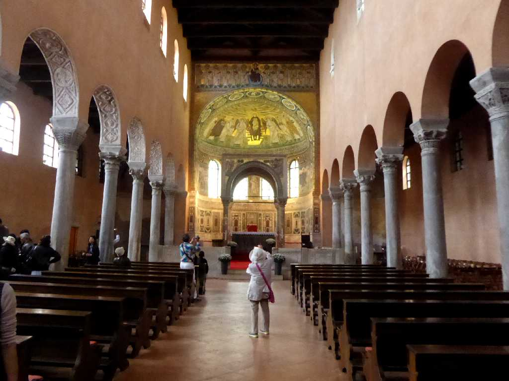
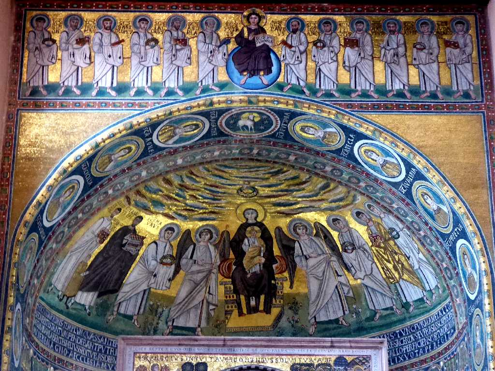
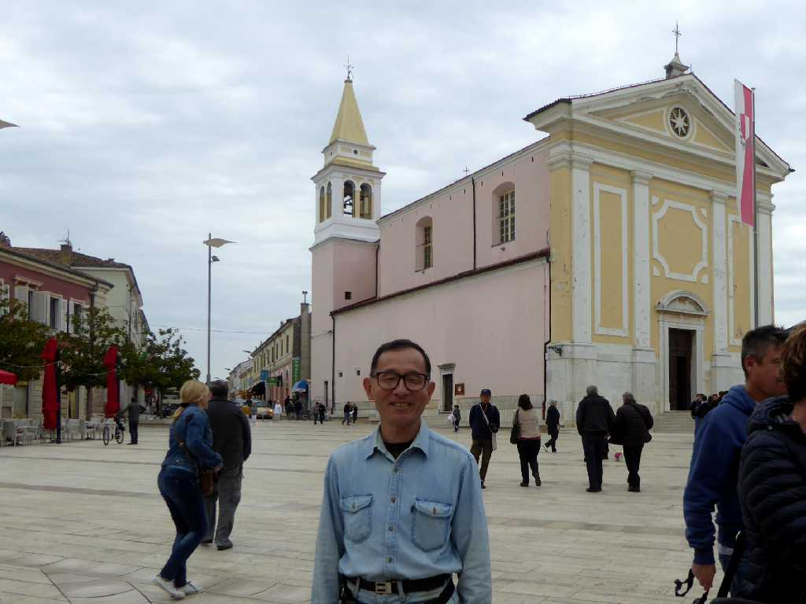

Trg Slobode (Slobode Square) Poreč
ローマ時代より栄えたアドリア海の美しい街ポレッチ

Eufrazijeva bazilika
４世紀に改修され５５３年に旧聖堂跡に創られたビザンチン初期のエウフラシウス聖堂

Ulaz Eufrazijeva bazilika

Oltar Eufrazijeva bazilika

Mozaik Eufrazijeva bazilika
祭壇正面のキリストと１２使徒やマリアと天使などキリストの降誕を描いたモザイク画が美しい

October 8 2016 Poreč